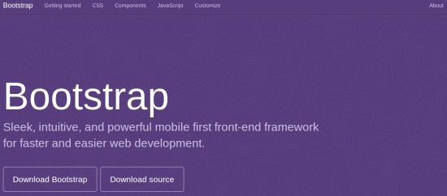
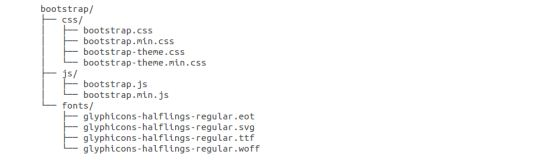
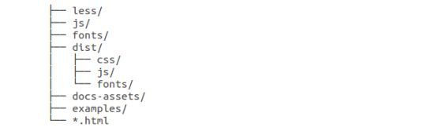

Bootstrap 环境安装
Bootstrap のインストールは非常に簡単です。この章では、Bootstrap のダウンロードとインストール方法、Bootstrap のファイル構造について説明し、例を通してその使い方をデモンストレーションします。
下载 Bootstrap
こちらからhttp://getbootstrap.com/Bootstrap の最新バージョンをダウンロードします。このリンクをクリックすると、次のような Web ページが表示されます。

二つのボタンが表示されます：
- Download Bootstrap：Bootstrap をダウンロードします。このボタンをクリックすると、Bootstrap CSS、JavaScript、およびフォントのプリコンパイル済み圧縮バージョンをダウンロードできます。ドキュメントや元のソースコードファイルは含まれません。
- Download Sourceソースコードをダウンロードします。このボタンをクリックすると、フォームから最新の Bootstrap LESS および JavaScript ソースコードを直接入手できます。
未コンパイルのソースコードを使用する場合は、再利用可能な CSS ファイルを生成するために LESS ファイルをコンパイルする必要があります。LESS ファイルのコンパイルに関して、Bootstrap 公式がサポートしているのはRecess，これは Twitter ベースのless.jsCSSのヒント。
よりよく理解し、より便利に使用するために、このチュートリアルでは Bootstrap のプリコンパイル済みバージョンを使用します。
ファイルはコンパイル済みかつ圧縮済みであるため、独立した機能開発においては、毎回これらの独立したファイルを含める必要はありません。
このチュートリアルの作成時点では、最新版（Bootstrap 3）を使用しています。
文件结构
プリコンパイル済みのBootstrap
Bootstrap のコンパイル済みバージョンをダウンロードして ZIP ファイルを解凍すると、以下のファイル/ディレクトリ構造が表示されます：

上の図に示すように、コンパイル済みの CSS と JS（bootstrap.*）、およびコンパイル済みで圧縮された CSS と JS（bootstrap.min.*）を確認できます。また、Glyphicons のフォントも含まれており、これはオプションの Bootstrap テーマです。
Bootstrapソースコード
Bootstrap のソースコードをダウンロードした場合、ファイル構造は次のようになります：

- less/、js/とfonts/下記のファイルは、それぞれ Bootstrap CSS、JS、およびアイコンフォントのソースコードです。
- dist/フォルダには、上記のプリコンパイル済みダウンロードセクションに記載されているファイルとフォルダが含まれています。
- docs-assets/、examples/とすべての*.htmlファイルはBootstrapドキュメントです。
HTML 模板
Bootstrap を使用した基本的な HTML テンプレートは次のとおりです：
实例
ここでは、以下のものが含まれていることがわかります。jquery.js、bootstrap.min.jsとbootstrap.min.cssファイルは、通常の HTML ファイルを Bootstrap を使用したテンプレートに変えるために使用されます。
上記のコードセグメント内の各要素の詳細については、Bootstrap CSS 概览章では詳しく説明します。
实例
それではBootstrapを使って"Hello, world!"を出力してみましょう：
Staticfile CDN 推荐
国内ではStaticfile CDN上のライブラリを使用することをお勧めします：
さらに、以下の CDN サービスを使用することもできます：
- 国際的には以下を使用することをお勧めします：https://cdnjs.com/